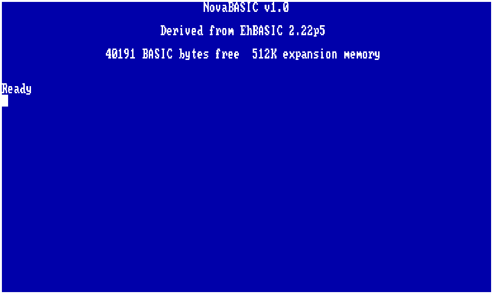
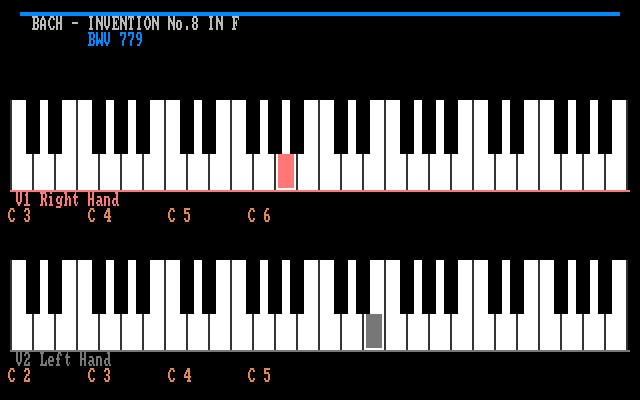

Avalonia
Reference desktop VM with NovaBASIC, rendering, audio, storage, network, and development tooling.
6502/65C02 computer platform
One machine model across a desktop emulator, a browser host experiment, Verilator simulation, and ULX3S FPGA hardware with ESP32 NovaHost services.
NovaVM keeps the approachable 6502 programming model and adds a Nova-specific video controller, sprites, DMA, blitter, copper lists, file I/O, audio, storage, networking, and host debug control.
Run it here
The static site includes the browser emulator, using the Rust WebAssembly core by default. Boot NovaBASIC, switch to Logo or Forth, change speed, paste text into the machine, and mount local disk images without a server.

LaunchOne machine, multiple hosts
The desktop host is the reference development surface. Verilator tests keep the RTL implementation measurable. The ULX3S plus ESP32 path brings the same register model to physical video, SDRAM, storage, and debug hardware.
Reference desktop VM with NovaBASIC, rendering, audio, storage, network, and development tooling.
Fast RTL simulation for validating VGC, DMA, blitter, XRAM, SID, NIC, and bus behavior.
FPGA target with HDMI output, SDRAM-backed XRAM, SD assets, ROM loading, and ESP32 debug services.
Current machine views

Hardware surface
80x50 text, 320x200 4-bit graphics, 16 hardware sprites, tiles, copper lists, DMA, and blitter paths.
64 KB CPU-visible address space plus 512 KB expansion RAM exposed through flat 24-bit XRAM tooling.
Host directories, NDI disk images, file I/O registers, ROM loading, mounted assets, and debug transport.
Dual SID model, hosted MIDI and music streams, wavetable synth work, and a message-oriented TCP NIC.
Downloadable books
The site ships with the currently built books. As more manuals are generated, they can be added as static PDF assets without changing the rest of the site.
Start locally
Install the .NET 10 SDK, clone the repository, restore the solution, and launch the Avalonia host. For full ROM and book rebuilds, add ca65, ld65, Python, pandoc, and a LaTeX toolchain.
git clone https://github.com/barryw/NovaVM.git
cd NovaVM
dotnet restore e6502.sln
dotnet run --project e6502.Avalonia